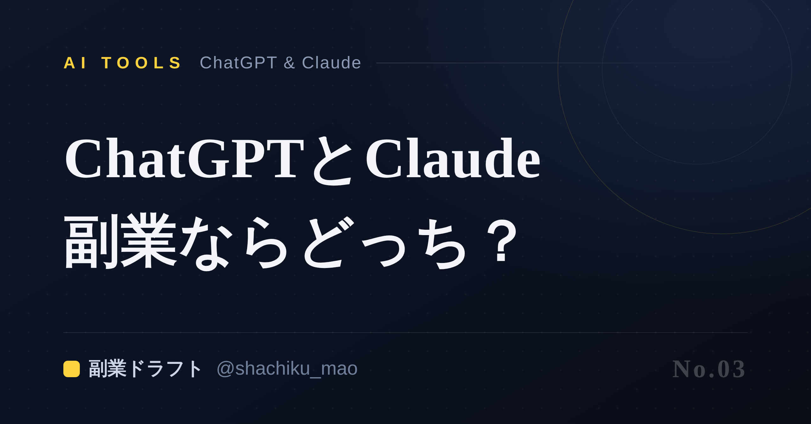
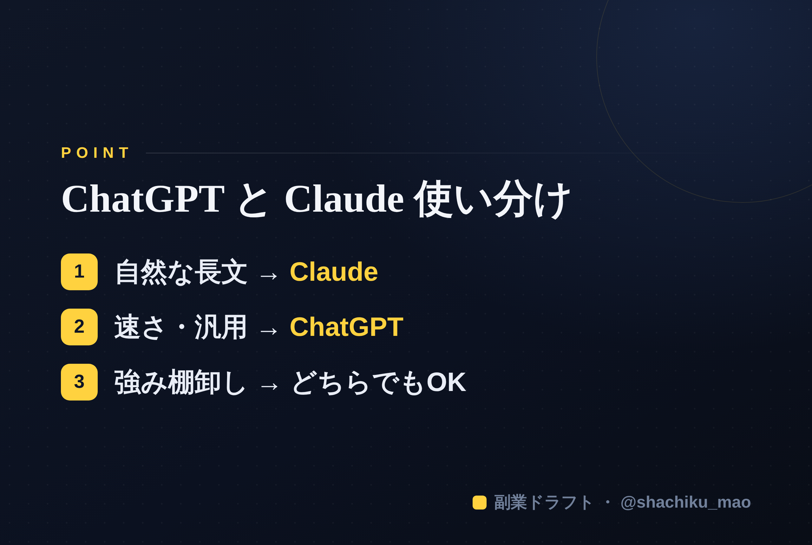

使い方
1. 「タイトルをコピー」→ note のタイトル欄に貼る
2. オレンジのラベルの画像（見出し画像）を note の見出し画像に設定
3. 「本文1をコピー」→ note本文に貼る
4. 青いラベルの位置（本文の途中）に、同じ名前の画像をアップして挿入
5. 「本文2をコピー」→ 続きを貼る
※ 見出しが普通の文字になったら、その行を選んで「大見出し」に設定してください
1. 「タイトルをコピー」→ note のタイトル欄に貼る
2. オレンジのラベルの画像（見出し画像）を note の見出し画像に設定
3. 「本文1をコピー」→ note本文に貼る
4. 青いラベルの位置（本文の途中）に、同じ名前の画像をアップして挿入
5. 「本文2をコピー」→ 続きを貼る
※ 見出しが普通の文字になったら、その行を選んで「大見出し」に設定してください
ChatGPTとClaude、副業の発信で使い分ける方法【会社員向け】
見出し画像に設定：seo-03.png

AIで発信を始めようとすると、まず迷うのが「ChatGPTとClaude、どっちを使えばいいの？」という点です。この記事では、副業の発信という用途にしぼって、2つの使い分けをシンプルに整理します。
結論：長文・自然な日本語はClaude、速さと汎用はChatGPT
細かい機能差はよく変わるので、"発信に使う"という目的だけで見ると、ざっくりこう考えると迷いません。
- Claude：note記事や長めの投稿など、自然で読みやすい日本語の長文が得意な場面
- ChatGPT：アイデア出し、短文の量産、調べ物まで含めたオールラウンドな場面
どちらも無料で使える範囲があります。まずは両方触って、"自分の文章に近い方"を選ぶのが一番です。
使い分けの具体例
①強みの棚卸し・インタビュー → どちらでもOK 「私に7つ質問して、答えから発信テーマを提案して」のような"質問させる"使い方は、どちらも得意です。
②note記事・長めの投稿 → Claude寄り 文章のトーンが自然で、長文でも破綻しにくい傾向があります。
③ネタ出し・短文の大量生成 → ChatGPT寄り 「このテーマを10の切り口に分解して」のような発散は、サクサク進みます。
大事なのは"どっちか"より"使い方"
正直、ツール選びで消耗するより、どちらか1つを"自分専用"に育てる方が成果につながります。自分の設定（誰に・何を・どんなトーンで）を一度渡して固定しておくと、毎回の指示が半分になります。
本文中に挿入：seo-03-body.png（この記事のポイント）

まとめ
- 長文・自然な日本語はClaude、速さ・汎用はChatGPT
- 棚卸し（質問させる使い方）はどちらでもOK
- ツールを増やすより、1つを自分専用に育てる
※ ここからは宣伝です。 強みの棚卸しから発信の下書きまでをAIが手伝うツール「副業ドラフト」を作りました。ヒヤリング・強み棚卸し・Threads3本まで無料で試せます → https://note-threadssf.onrender.com
🎁 最新のAI活用プロンプトや発信ノウハウは公式LINEで無料配布中 → https://lin.ee/RzyA13P
役に立ったら、スキ＆フォローで応援してもらえると嬉しいです😊